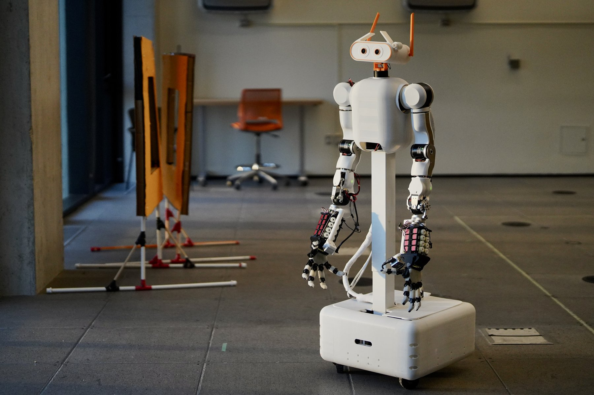

1. Abstract
As robot learning moves beyond the tabletop, many tasks require mobility, adjustable reach, active perception, and bimanual dexterity. Commercial platforms combining these capabilities are costly, while affordable open-source alternatives cover only a subset and require software integration. We present MABEL, an open-source anthropomorphic mobile bimanual robot with 56 degrees of freedom (DOF) and a US$8.1k parts cost. It combines two 7-DOF arms with 17-DOF hands, a pitching torso, a lift, a 3-DOF head, and a holonomic base. Back-drivable arms and torso support compliant interaction, with fingertip reach from floor level to 2.23 m. The head and torso roughly triple modeled camera coverage relative to a torso-fixed camera. Apple Vision Pro head and hand tracking enables whole-body teleoperation without handheld controllers, with 137 ms mean glass-to-glass stereo video latency over the robot's Wi-Fi hotspot. We demonstrate an end-to-end imitation learning pipeline, from teleoperated data collection to policy deployment, using a shared command interface and whole-body controller.

v1.0 · as built · no renders
Whole-body hardware
56 functional DOF · two 17-DOF hands · 0–2.23 m fingertip reach.
Two 7-DOF arms, a pitching torso, a 0.635 m lift, a 3-DOF head and a holonomic base. The paper reports an $8,056 parts subtotal for the essential build. Module drawings, assembly steps and the bill of materials are available in the build guide.
Explore the hardware →Whole-body teleoperation
Vision Pro head and hand tracking · local and global control modes.
Head and hand tracking drive the neck, torso and arms without handheld controllers. Local and global modes provide different mappings for the base and lift. Mean stereo video latency is 137 ms over the robot’s hotspot.
See teleoperation →Shared software stack
One command interface from simulation and data collection to learned policies.
MuJoCo and Isaac Lab digital twins use the same controller and retargeter as the physical platform. Curated demonstrations export to LeRobot v3 for ACT training; policy references return through the shared whole-body controller.
Explore the pipeline →